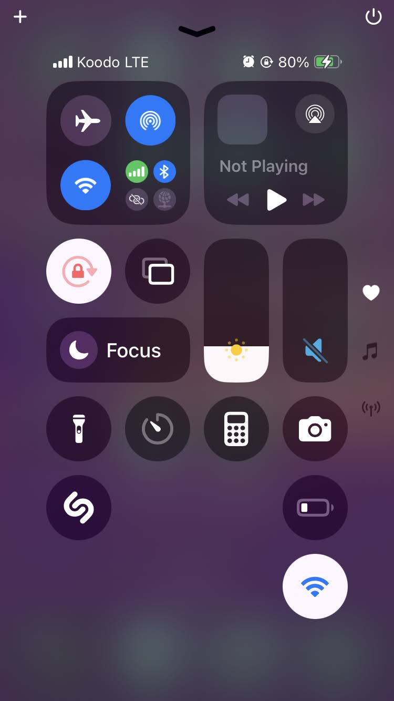

I wrote this guide to help users understand how and why (and why not) to connect their iPhones to a WAP.
How I Wrote This Guide
I tested the procedure and documented my findings as a set of organized, repeatable instructions:
I divided each connection method into its own set of instructions to simplify and streamline information delivery.
I forked the second method's alternate paths into two interchangeable procedures.
I chunked content with headings, lists, and note boxes so users can quickly locate and absorb the information they need.
I limited each procedure to a manageable set of steps.
I established a consistent structure for each procedure:
Headings identify each procedure.
Numbered lists highlight instructions.
Each list item contains only one step.
Supplementary information appears separate from the listed steps.
I included screenshots to highlight interface elements and illustrate outcomes.
How to Connect Your iPhone SE (2nd Generation) to a Wireless Access Point
You can connect your iPhone SE (2nd Generation) to a wireless access point (WAP) through the Settings app or Control Center.
Connecting to a WAP allows your iPhone SE (2nd Generation) to join a network wirelessly.
Connecting Through the Settings App
Connect to a WAP through the Settings app:
Tap the Settings app on your Home Screen or in your App Library.
Tap Wi-Fi to manage your settings.
If Wi-Fi is off, tap it on.
In the Networks list, tap the name of the network you want to join.
If prompted, enter the password in the Password field, then tap Join.
Caution
Connecting to a network that lacks password protection puts your personal information at risk of unauthorized access and can expose your phone to malware.
Once your iPhone SE (2nd Generation) successfully connects, the network name will appear with a checkmark above the Networks list.
Connecting Through Control Center
Connect to a WAP through Control Center:
Swipe up from the bottom of your iPhone SE (2nd Generation) screen to open Control Center.

Depending on how your Control Center is configured, you can access Wi-Fi by expanding the Connectivity group or the Wi-Fi control.
Option 1: Expanding the Connectivity Group
Expand the Connectivity group in one of two ways to view its controls:
If the Connectivity group is present in Control Center, touch and hold the group.
Or tap the Antenna shortcut in Control Center.
If Wi-Fi is off, tap it on.
Touch and hold Wi-Fi to display the list of available networks.
Tap the name of the network you want to join.
If prompted, enter the password in the Password field, then tap Join.
Caution
Connecting to a network that lacks password protection puts your personal information at risk of unauthorized access and can expose your phone to malware.
Once your iPhone SE (2nd Generation) successfully connects, the network name will appear with a checkmark above the Networks list.
Option 2: Expanding the Wi-Fi Control
If the Wi-Fi control is present in Control Center, complete the following steps:
If Wi-Fi is off, tap it on.
Touch and hold Wi-Fi to display the list of available networks.
Tap the name of the network you want to join.
If prompted, enter the password in the Password field, then tap Join.
Caution
Connecting to a network that lacks password protection puts your personal information at risk of unauthorized access and can expose your phone to malware.
Once your iPhone SE (2nd Generation) successfully connects, the network name will appear with a checkmark above the Networks list.

group is present in Control Center, touch and hold the group.
shortcut in Control Center.


control is present in Control Center, complete the following steps: